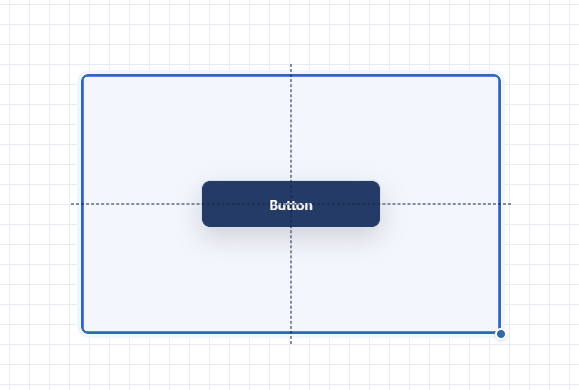
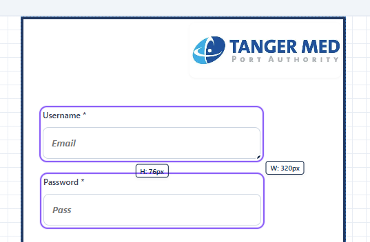

TMPA UI Builder
Concevoir des interfaces à partir de composants réutilisables, puis les versionner et les faire valider avant publication.
Le besoin
Les interfaces développées séparément entraînent des composants dupliqués et des incohérences. L’objectif : proposer un socle commun pour créer des pages métier.
Ma contribution
Conception et développement Full-Stack de la plateforme dans le cadre de mon PFA : éditeur, API, modèle de données et circuit de validation.
Le résultat
Une plateforme fonctionnelle couvrant l’édition, les versions et la revue. Les scénarios principaux sont validés manuellement dans le rapport.
La réalisation en pratique
- Composer des pages avec des composants réutilisables, des conteneurs imbriqués et un panneau de propriétés.
- Gérer les rôles et les autorisations, puis soumettre une version précise à la revue avant publication.
- Conserver des instantanés de versions et permettre leur restauration ; assurer la cohérence des opérations avec des transactions MongoDB.
Un éditeur pensé pour la précision


Les repères d’alignement et les propriétés des composants accompagnent la composition d’une page. Le parcours de revue s’appuie sur une version identifiée, pour distinguer les modifications en cours et la version soumise.
Captures de démonstration extraites de mon rapport de PFA TMPA. Elles présentent l’application réalisée pendant le stage.
Consulter le code sur GitHub (nouvel onglet)